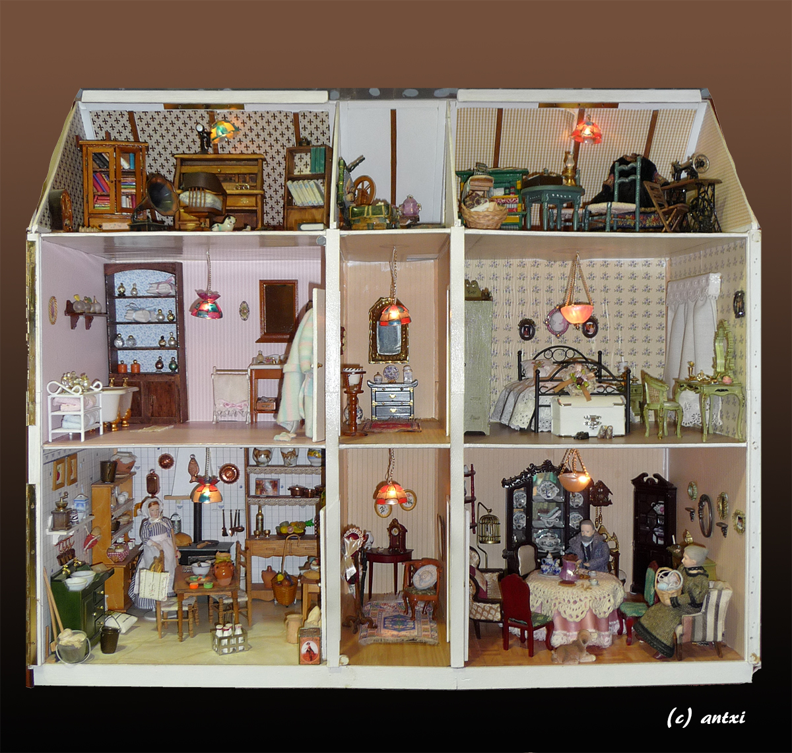
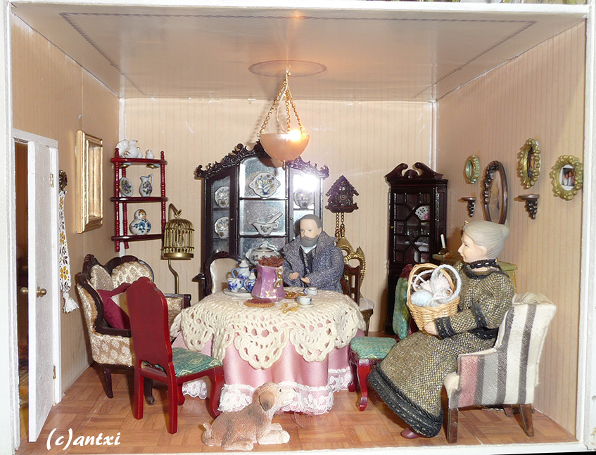
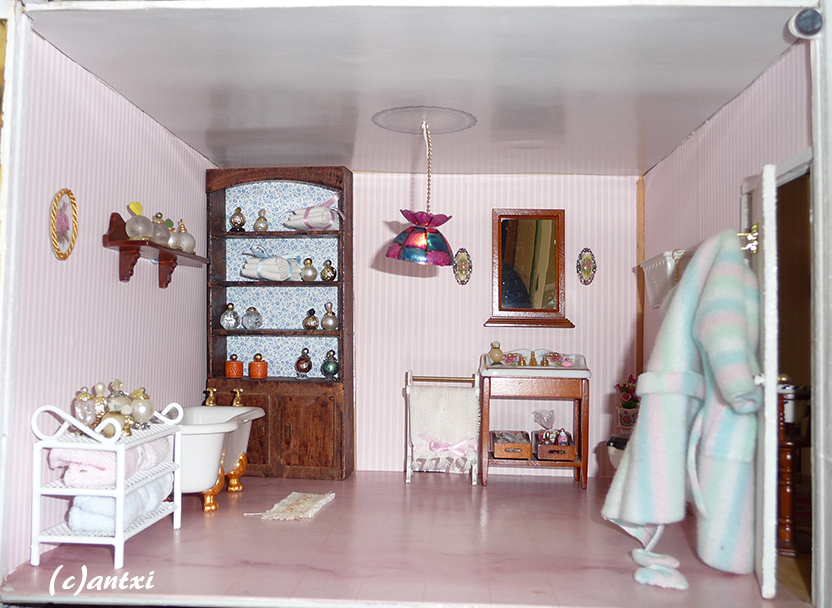
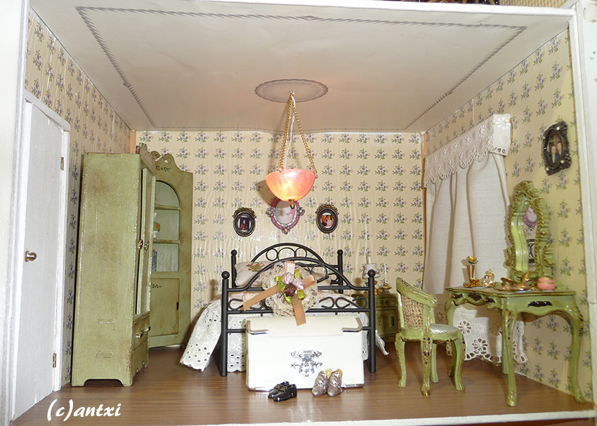
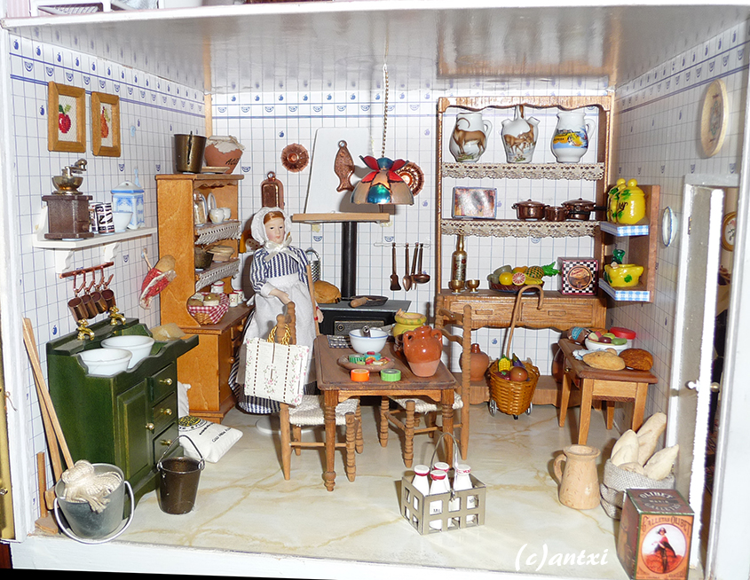
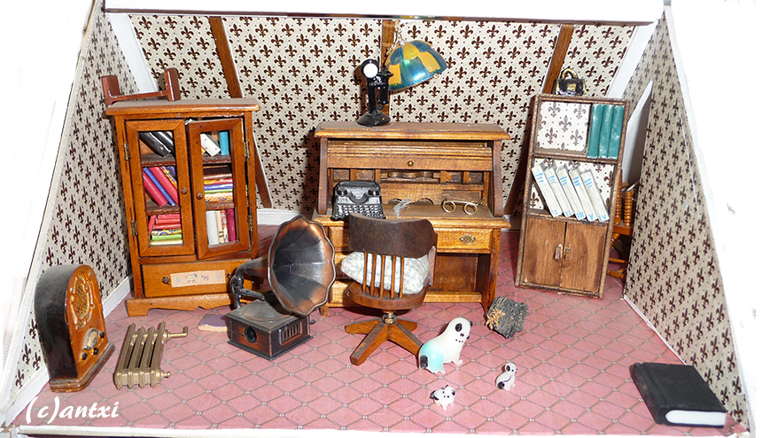
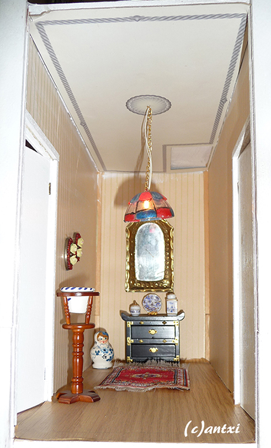
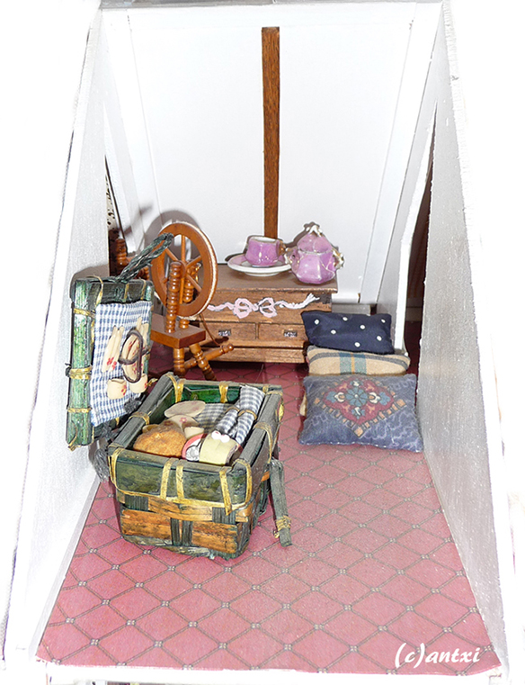
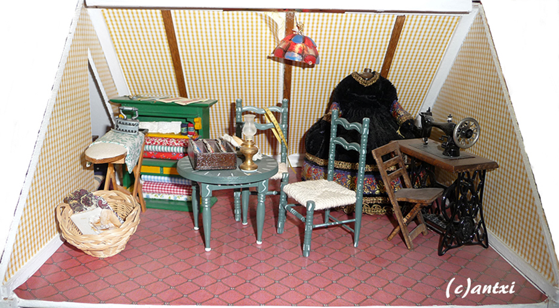
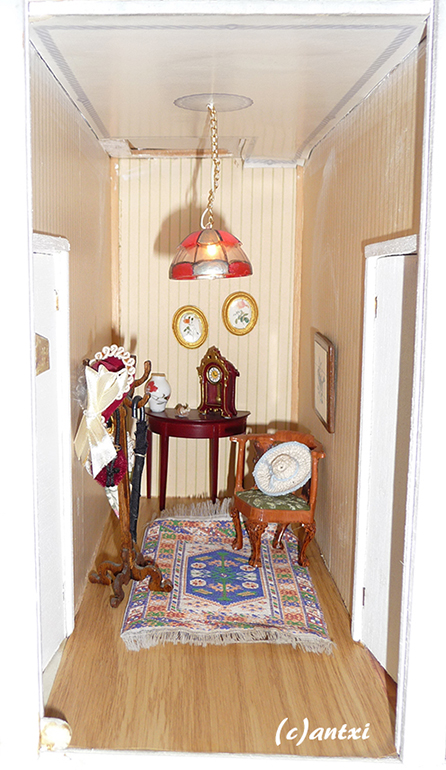

Explore each room of this doll's house to find hidden facts about it.

×

In this room we find the very first piece of furniture we ever built: the armchair.
In this first house we actually built every piece of furniture and not only the structure of the house. But we kept buying new pieces as time went by and changing it for improvement.
×

The bathroom in this house kept changing through the years but the shelving unit in the back stayed always the same.
The small rug is cross stitched and the perfume bottles are made from necklace beads
×

We decorated with green to give the room a different feel since originally it was a bit dull.
The bed clothing is handmade by Silvia and the dressing table and its contents were bought in an annual fair in Madrid
×

In here, we kept the shelving unit from the original kit but we changed all the other aspects of the kitchen.
As in other rooms in this and the other houses, the fruit art in the wall is cross stitched.
×

In this room only the bookshelves on the right are original from when we built it.
All the books are wood pieces covered in wrapping paper, and you may never guess what the gramophone used to be... A pencil sharpener!
×

In this hall we find a couple of interesting cameos on the wall... that used to be earrings.
The other pieces of decoration were bought in fairs, except for the Japanese style furniture in the back, that was bought online.
×

Everything inside the picnic basket is handmade as well as the pillows. The few pieces of china are from the early XX century and were given as a gift to us.
You notice something different in this room? It is the only room without lights.
×

Plenty of details in this sewing room. The dress is from a broken doll bought in a street market.
The only original piece of furniture is the chair in front of the sewing machine, which was bought in a doll's house shop.
×

In this entrance (as well as the hall in the first floor) we see an aspect of the original design of the house: Stairs. You can see it in the ceiling.
The stairs were removed to have that space for decoration and furniture.